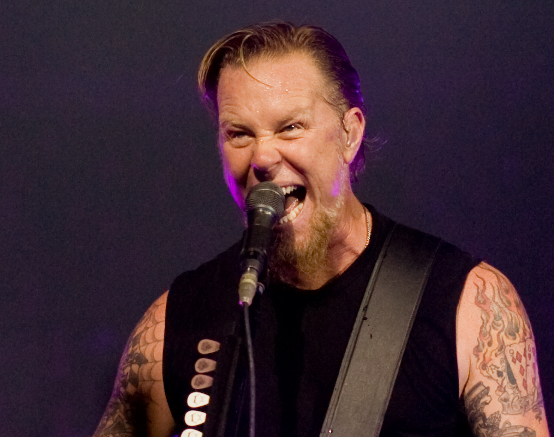
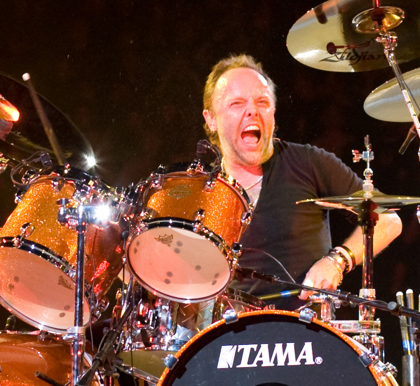
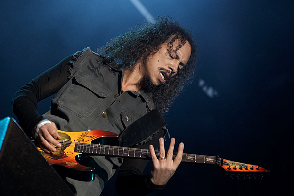
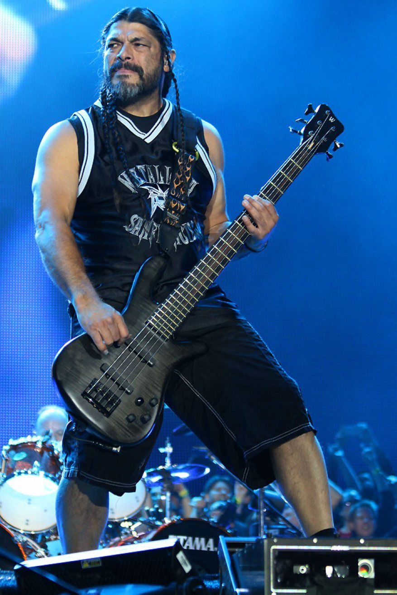

Author: Muhammad Syafa Suryakusmana
Informatika 1
| James Alan Hetfield (lahir 3 Agustus 1963[1]) adalah penulis lagu, pendiri, penyanyi dan pemain gitar ritme kelompok heavy metal Metallica. James bersama tiga kawannya yang tergabung dalam Metallica merupakan salah satu dari The Big Four, yaitu Metallica, Anthrax, Slayer, dan Megadeth melalui keunikan dan gaya masing masing keempat band itulah genre thrash metal pernah meraih puncak kejayaannya. James Hetfield terkenal karena riff gitarnya yang tidak terlalu 'njelimet' namun sangat pas dan cocok ketika bersandingan dengan instrumen lain dan juga penampilannya ketika di atas panggung yang garang dan kerap mengundang decak kagum setiap penonton yang melihatnya |  |
| Lars Ulrich (lahir 26 Desember 1963) merupakan salah satu pelopor terbentuknya superband Metallica dan genre thrash metal. Lars Ulrich adalah drummer kelompok Metallica. Ayahnya adalah pemain tenis profesional dan musikus jazz Torben Ulrich yang bermain musik jazz bersama Stan Getz dan Miles Davis. Lars Ulrich mengikuti jejak ayahnya di kedua bidang ini, bermain tenis sejak kecil dan belajar main musik. Tapi minat musiknya kemudian beralih setelah mendengar banyak kelompok musik dari the New Wave of English Heavy Metal (gelombang baru musik heavy metal dari Inggris). Pada usia sembilan tahun ia kemudian pergi menonton konser kelompok Deep Purple dan menjadi fan drummer Ian Paice. Ketika berusia tigabelas tahun ia mendapat satu set drum dari neneknya dan mulai berlatih dengan serius. Empat tahun kemudian ia pergi ke Los Angeles, California, Amerika dengan niat untuk bermain tenis. Ia kemudian memasang iklan baris di salah satu koran lokal dan mendapat jawaban dari James Hetfield. Berdua mereka kemudian menjadi inti kelompok Metallica. |
 |
| Hammett dilahirkan di El Sobrante, California. Sebagai anak remaja ia menunjukkan minat terhadap koleksi rekaman musik hard rock milik abangnya Rick, termasuk Led Zeppelin, Black Sabbath, dan UFO. Salah satu pengaruh terbesarnya adalah Jimi Hendrix dan ia telah memainkan bagian-bagian dari lagu Hendrix dalam solo gitarnya. Ia belajar bermain gitar pada usia 15 tahun, dimulai dengan sebuah Montgomery Ward catalog special dan sebuah kotak sepatu dengan speaker sebagai amplifier. |  |
| Robert Trujillo (lahir 23 Oktober 1964) adalah seorang bassis, yang telah bermain dengan Suicidal Tendencies, Infectious Grooves, Cyco Miko, Black Label Society dan Ozzy Osbourne sebelum bergabung dengan Metallica pada 2003. Ia dibesarkan di Venice, California dan menonjol dibanding musikus lainnya. Ia bermain di beberapa band lokal sebelum bergabung dengan Suicidal Tendencies pada 1989, menggantikan bassis ketiga band itu, Stymee. Ia direkrut ke band itu oleh teman sekolahnya Rocky George, yang bermain gitar dengan Suicidal Tendencies pada saat itu. Karyanya dengan Suicidal Tendencies dianggap luar biasa, dan ia menambahkan pengaruh funk dalam musik band ini, seperti terdengar dalam album-album Lights...Camera...Revolution! dan terutama dalam Art Of Rebellion. Ia kemudian mengalihkan rekan sejawatnya Mike Muir ke musik funk, dan keduanya membentuk Infectious Grooves untuk bermain musik funk. |
 |